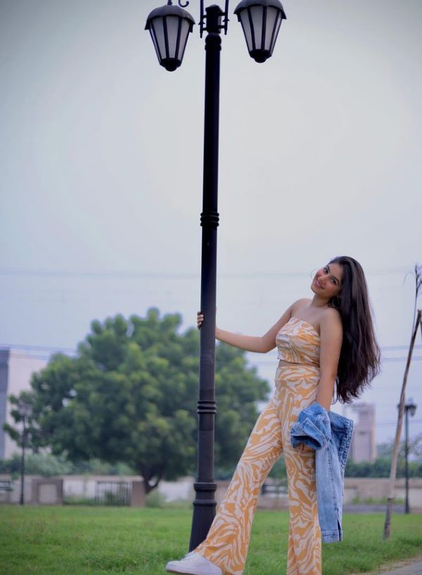
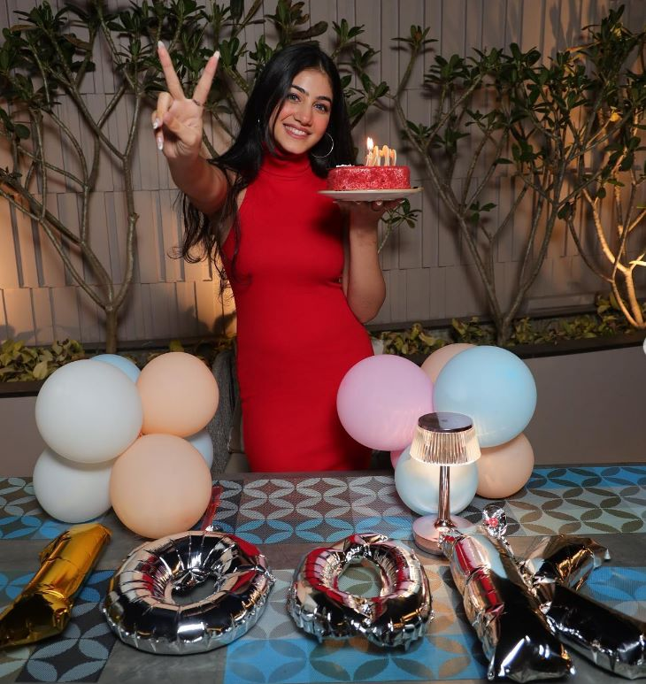

CONGRATULATIONS JASMEET FOR 100K FOLLOWERS ON INSTAGRAM

ABOUT JASMEET
JASMEET KAURis an Indian actress, dancer and model. She was born on 13 October 2001 in Jalandhar, Punjab, India. Avneet is also known for portraying Princess Yasmine in Aladdin – Naam Toh Suna Hoga and Charumati in Chandra Nandini. She started her career with Dance India Dance Li’l Masters as a contestant. She also participated in another dance show named Dance Ke Superstars. She made her acting debut with Meri Maa, playing the character Jhilmil. Later, she was part of a comedy series Tedhe Hain Par Tere Mere Hain. In June 2012, she participated in the fifth season of a dance reality show, Jhalak Dikhhla Jaa. In 2012, she was seen in Savitri, as young Rajkumari Damyanti and in 2013 as Young Paaki in Ek Mutthi Aasmaan. Kaur started her filming career with the 2014 Hindi film Mardaani with the role of Meera. She then portrayed the role of Khushi in Hamari Sister Didi.
JASMEET'S YOUTUBE VIDEO